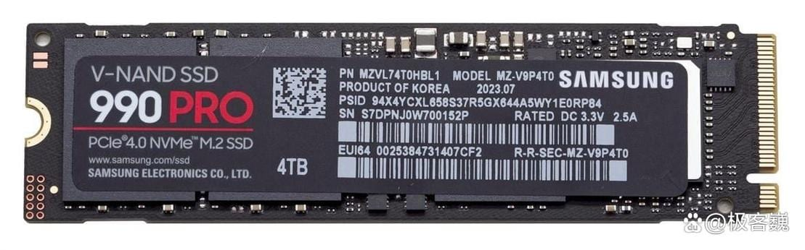

三星 990 PRO 1TB

PCIe 4.0 时代的旗舰固态，顺序读取高达 7450MB/s，自研主控加第七代 V-NAND 与独立缓存，随机性能与稳定性均属第一梯队，适合系统盘与游戏盘一步到位。
客观评测
990 PRO 1TB 采用三星 Pascal 主控与 V-NAND V7 TLC 颗粒，配备 1GB LPDDR4 独立缓存，顺序读取 7450MB/s、写入 6900MB/s，随机读写约 1400K/1550K IOPS，基本吃满 PCIe 4.0 x4 带宽。标称寿命 600TBW，提供 5 年质保与 AES 256-bit 全盘加密。实测大文件连续写入在缓存耗尽后仍保持较高直写速度，4K 随机性能对系统响应与游戏加载提升明显。
主观点评
把系统装在 990 PRO 上之后，开机和软件启动的爽快感是机械盘甚至 SATA 固态无法比拟的。魔术师软件可以随时查看健康度与升级固件，让人安心。需要注意的是它满速工作时温度不低，笔记本加装最好确认散热空间，台式机建议上主板自带的 M.2 装甲。虽然单价偏高，但作为用五年的主力盘，这份稳定与速度值得投资。
优点与不足
- PCIe 4.0 满速性能，读写均属顶级
- 独立缓存与自研主控，重负载稳定
- 配套魔术师软件完善，固件更新勤快
- 满载发热较高，建议搭配散热片
- 价格比国产方案贵出一截
参数规格
| 容量 | 1TB |
|---|---|
| 接口 | M.2 PCIe 4.0 x4（NVMe 2.0） |
| 顺序读取 | 最高 7450MB/s |
| 顺序写入 | 最高 6900MB/s |
| 随机读写 | 约 1400K/1550K IOPS |
| 主控 | 三星 Pascal 自研主控 |
| 颗粒 | 三星 V-NAND TLC（V7） |
| 缓存 | 1GB LPDDR4 独立缓存 |
| 寿命 | 600TBW |
| 质保 | 5 年质保 |
| 加密 | AES 256-bit 全盘加密 |
| 功耗 | 典型读取约 5.4W |
| 散热 | 提供带散热片/RGB 版本可选 |